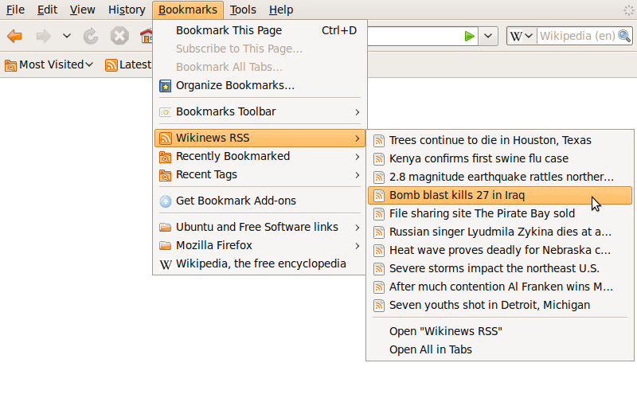

Bookmarks
|
In the context of the World Wide Web, a bookmark is a Uniform Resource Identifier (URI) that is stored for later retrieval in any of various storage formats. All modern web browsers include bookmark features. Bookmarks are called favorites or Internet shortcuts in Internet Explorer, and by virtue of that browser's large market share, these terms have been synonymous with bookmark since the first browser war. Bookmarks are normally accessed through a menu in the user's web browser, and folders are commonly used for organization. In addition to bookmarking methods within most browsers, many external applications offer bookmark management. |
|
Tim Berners-Lee, a British scientist, invented the World Wide Web (WWW) in 1989, while working at CERN. The Web was originally conceived and developed to meet the demand for automated information-sharing between scientists in universities and institutes around the world. CERN is not an isolated laboratory, but rather the focal point for an extensive community that includes more than 17 000 scientists from over 100 countries. Although they typically spend some time on the CERN site, the scientists usually work at universities and national laboratories in their home countries. Reliable communication tools are therefore essential. The basic idea of the WWW was to merge the evolving technologies of computers, data networks and hypertext into a powerful and easy to use global information system. |
 |